Corrigé le 24/10 au soir : la mise en peau perdait des détails (touffes, bouts de queue) et posait des taches de couleur d'une partie voisine (aile bleue sur la cuisse du Sphinx). Nouvelle méthode : maillage plus fin, couleur prise au point exact du modèle d'origine. Ils sont maintenant fidèles aux croquis.
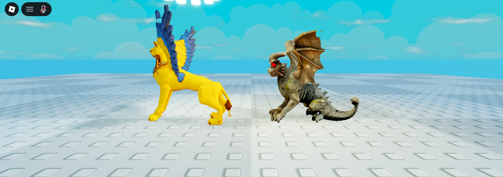
Même méthode que les quadrupèdes : une seule queue loin des pattes, yeux en amande, chacun vérifié de dos. Les dragons sont maintenant à quatre pattes, le corps à l'horizontale (avant, ils se tenaient debout comme des humains). Sur chaque image : à gauche l'actuel, puis le nouveau de profil, de dos et de face. Les 4 boss ailés (Dragon ancien, Griffon doré, Dragon de lave, Dragon spectral) ne sont pas touchés : leurs animations de combat dépendent de leur squelette.
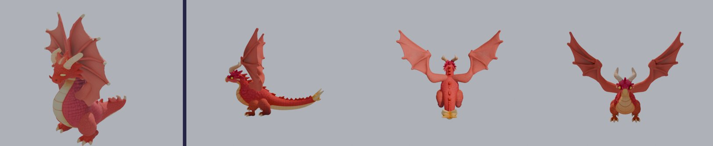
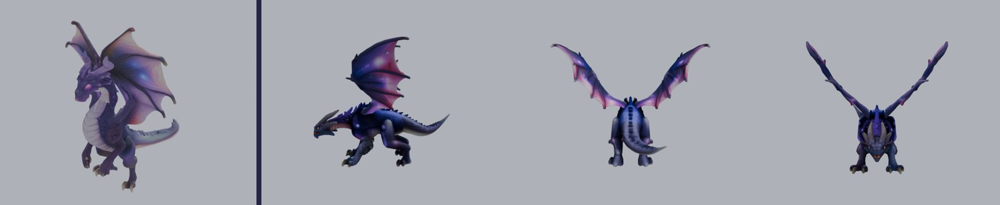
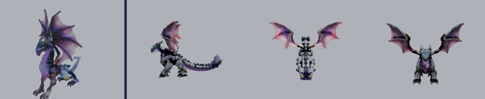
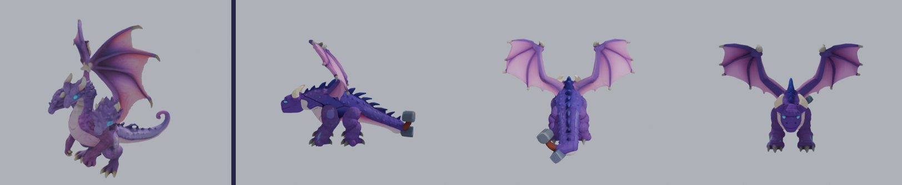
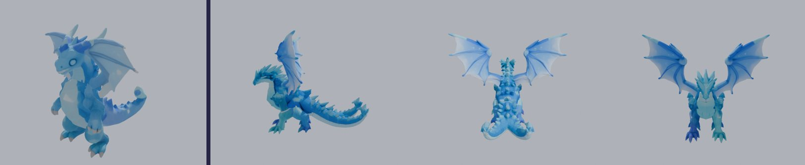
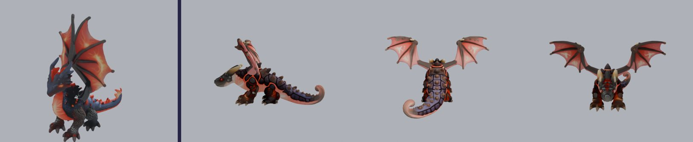
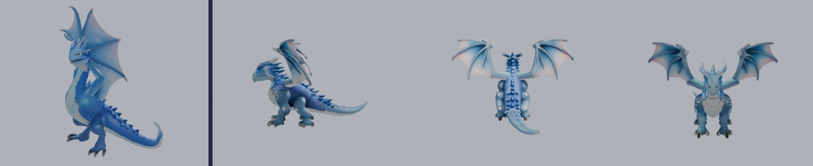
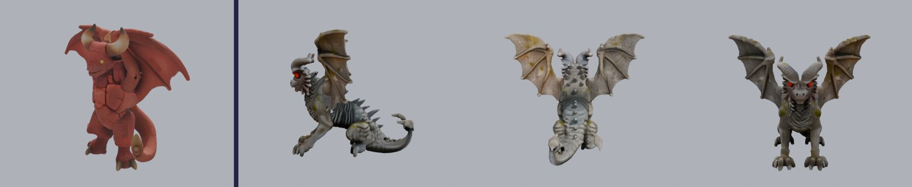
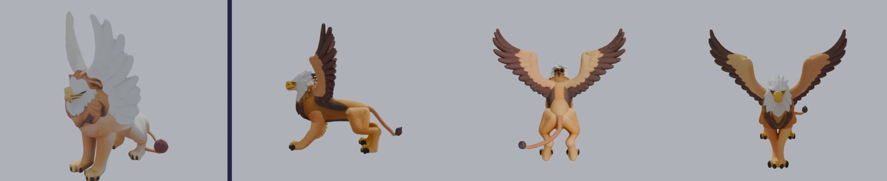
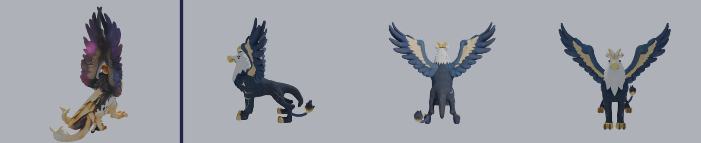
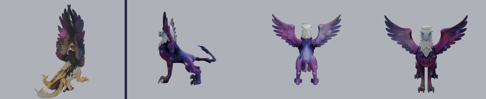
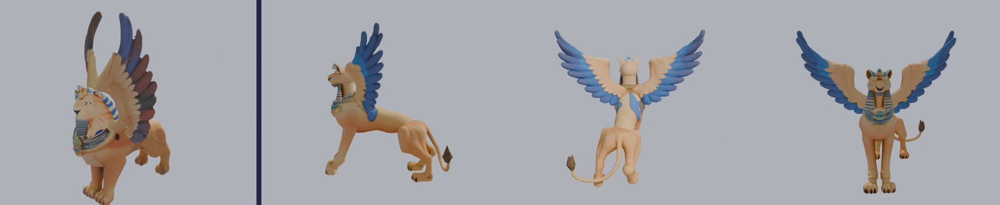
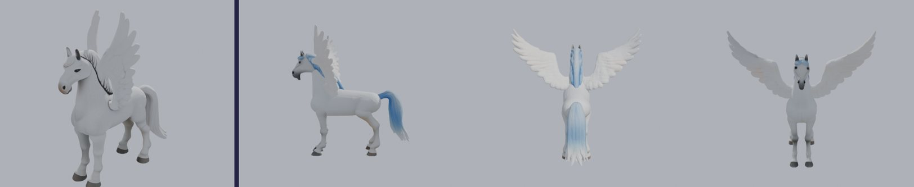
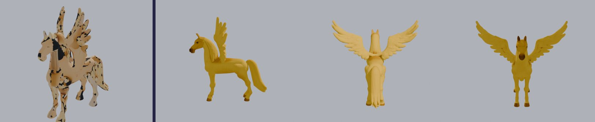
Dès qu'il y a une corne et des ailes, le générateur fait un poney de dessin animé (ou ajoute une corne au Pégase nuage). Je propose de garder les actuels pour ces trois-là, sauf si tu préfères une autre idée.
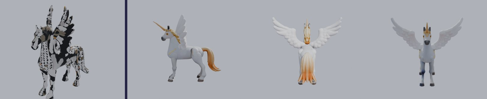
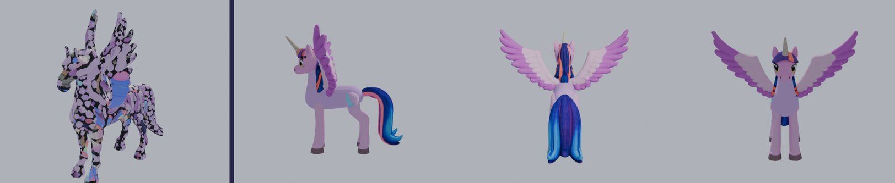
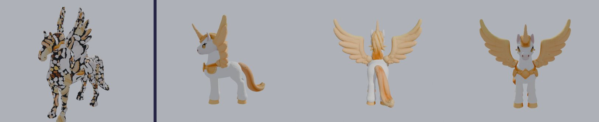